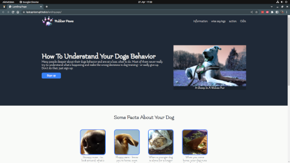

Your Projects
Project: Library
Second project of The Odin Project's Full Stack JavaScript Course. Slowly recognizing what's coming up to me soon. It was fun working on it although I despaired on it sometimes.
Project: Sign Up Form
Number one project in Full Stack JavaScript Course by The Odin Project. Should look good in any devices shape, although I lack the means to verify it. Feedback always welcome. Developer's hell must be accessibility...
Project: Calculator
Teaching a computer to calculate - must be a joke... Okay, the hard part is to tell this piece of electronic scrap how to present its calculations understandable for human beings! The last project of the Foundations Course by TOP.
Project: Etch-A-Sketch
No. 4 project of the Foundations Course by The Odin Project. I love this one. And very special thanks to Nicolai Waldman for his good description to rgb-hsl-conversion. Maybe there is another way of getting hsl out of the color picker? Who knows?
Project: Rock-Paper-Scissors
My contribution for the 3rd project of TOP's Foundation Course - annoying sounds included...
Project: Landing Page
Dogs - of course, for this 2nd Odin Foundations Course project. Dogs are the best people. I've got a 9 year old labrador-mix lady and a staffordshire-mix little miss, two and a half years old - still a puppy. They teach me so much.